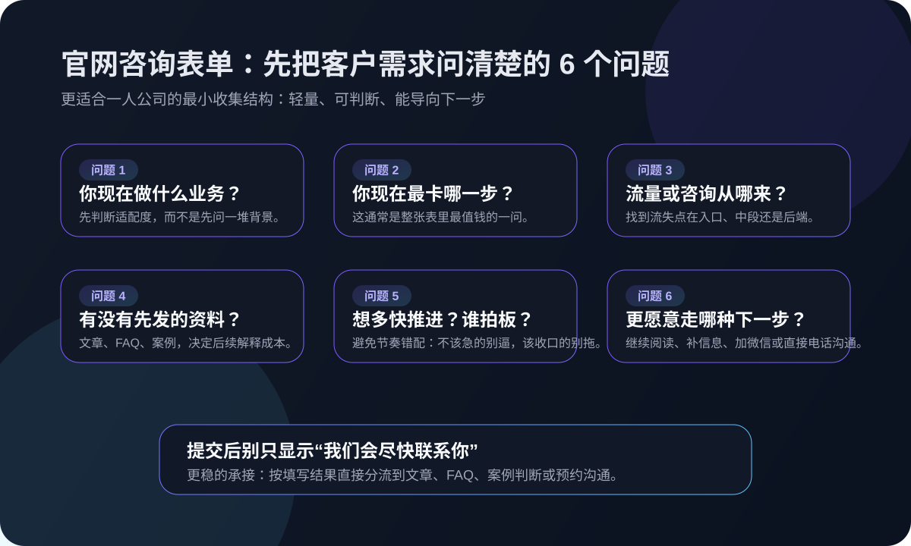

这篇先解决什么
先解决“表单该问什么”“问太多会不会流失”“怎么把表单和文章、FAQ、咨询承接连起来”“哪些信息现在就该收、哪些可以放到后面再问”这几类更现实的问题，再谈更复杂的 CRM、自动化打分和多轮销售动作。
很多人搜“官网咨询表单怎么设计”“客户需求分析怎么做”“咨询表单收集什么信息”，本质上不是想做一个好看的表单，而是想把咨询接住、把需求问清楚、把后续沟通变得更轻。对一人公司来说，官网咨询表单最怕两种极端：一种是什么都不问，来了线索还得从头追问；另一种是一上来让对方填十几项，结果还没开口就把人劝退。真正更适合一人公司的做法，是先按客户阶段设计问题，再把 FAQ、案例、补信息和预约沟通接成一条顺手的承接路径。

先解决“表单该问什么”“问太多会不会流失”“怎么把表单和文章、FAQ、咨询承接连起来”“哪些信息现在就该收、哪些可以放到后面再问”这几类更现实的问题，再谈更复杂的 CRM、自动化打分和多轮销售动作。
Harris 的关键词策略和 Semrush 的关键词映射都在强调同一个原则：不同搜索意图，要有不同页面和不同承接动作。有人搜“AI 内容运营怎么开始”，说明他还在认知和比较；有人搜“官网咨询怎么接”“客户需求分析怎么做”，已经更接近决策阶段，需要的是更具体的判断入口。Shopify 对销售漏斗的解释也很实用：不是只看有没有流量，而是看用户在哪一步犹豫、在哪一步流失。HubSpot 对客户旅程图的说明则提醒我们，客户在每个触点上的感受都会影响后续动作。MBA 智库关于客户旅程和销售漏斗的内容也强调了一点：客户会经历认知、询问、行动、忠诚等阶段，每个阶段要问的问题并不一样。所以，官网咨询表单真正应该做的，不是让你一次性问完所有资料，而是匹配客户当前阶段，帮他顺利迈向下一步。
这 6 个问题的重点不是“问得多”，而是“每个问题都能决定下一步怎么接”。
这是判断适配度的第一步。不是为了做企业画像，而是为了快速知道对方属于内容型、咨询型、交付型，还是本地服务型。一人公司最怕什么都接，所以表单第一问不需要很复杂，只要能让你快速知道“这大概是什么业务”，后面内容、案例和沟通方向就能明显更准。如果连这个都不问，后续所有沟通都会变成猜。
这通常是整个表单里最值钱的一问。有人卡在内容起步，有人卡在 FAQ 承接，有人卡在咨询跟进，有人卡在复购留存。与其让客户填一堆背景，不如先问“你现在最想先解决什么”。这个问题能直接决定你该把他带去看哪篇文章、哪组 FAQ、还是直接进入沟通。对一人公司来说，这比先问预算更有现实价值。
这是为了判断你接下来要补“入口”还是补“承接”。如果对方说基本靠熟人介绍，那更该补官网入口和 FAQ；如果已经有文章和搜索流量，却接不住咨询，那更该补筛选、培育和跟进动作。Shopify 讲漏斗时一直在强调观察流失点，而这个问题就是帮你找到流失点在入口、中段还是后端。
这里说的资料不一定是正式方案，可能是一篇主文章、一组 FAQ、一页解决方案，甚至是一张流程图。这个问题的价值在于：如果客户现在什么都没有，那后续沟通会很吃力，因为每次都要临时解释；如果已经有资料，那你就该判断这些资料是缺入口、缺结构，还是缺“下一步动作”。这一步不是看包装，而是看有没有最基本的信任和说明支撑。
很多一人公司不敢问这类问题，怕客户有压力。但真正合适的客户，通常不会介意说明大概节奏。你不需要追问预算细节，只要知道是“先了解”“本周想推进”“这月内要落地”，以及是不是本人能决定，就足够安排跟进强度。HubSpot 讲客户旅程时提到不同触点会影响推进感受，这个问题正是在帮你避免后续节奏失配：不该急的人别逼，已经准备好的人别拖。
表单的最后一个问题，不应该只是“提交”。更好的做法是让客户选一个更轻的下一步：先看推荐文章、先看 FAQ、先加微信沟通、直接电话联系。这样一来，表单不是死路，而是分流器。有人适合继续阅读，有人适合补充信息，有人已经适合进入沟通。把下一步做成显式选项，会比“提交后我们联系你”更有掌控感，也更容易提高转化。
如果目标是一次性问完所有背景，客户大概率会在开始前就退出。
少了这一问，后续每次沟通都只能从头试探，效率很低。
客户不知道接下来会看到什么、等到什么，就容易流失在空白里。
表单不是审计表，越像考试，越不利于一人公司接住轻咨询。
真正要复盘的是谁继续阅读、谁补信息、谁进入沟通，而不是只有提交数。
如果你还没把咨询分成冷、温、热三层，先看这篇，把表单前面的筛选逻辑做稳。
如果你已经能收集需求，但提交后经常没有后续，可以继续看这篇，把中段培育接起来。
如果你想把官网表单、文章、FAQ 和咨询承接接成一条更容易转化的链路，可以直接沟通现状。
如果你现在也在做一人公司的官网、FAQ、咨询入口或内容承接，可以把现状发来，我们先帮你拆成最小可执行清单。